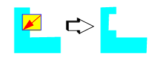

A
notch is a small rectangular indent of a polygon or box. You can
use the Notch button
in the Layout Viewer Toolbar to create additional segments in your polygons.
Procedure
- Select the Polygon check box
in the Object Selection toolbar.
- Click the Notch button in the Layout Viewer
toolbar.
- Select the box or polygon
on which you want to add or remove a notch.
- Use one of the following methods
to notch out (add area) or notch in (remove area):
If you want to...
|
Do the following:
|
|---|
Add a notch
|
Draw a box from left
to right, defining the notch to create. The box you draw must touch
or intersect the selected object. |
Remove a notch
|
Draw a box from right
to left, defining the notch to remove. The box you draw must touch or
intersect the selected object.  |
- Repeat steps 3 and 4 to add additional notches.